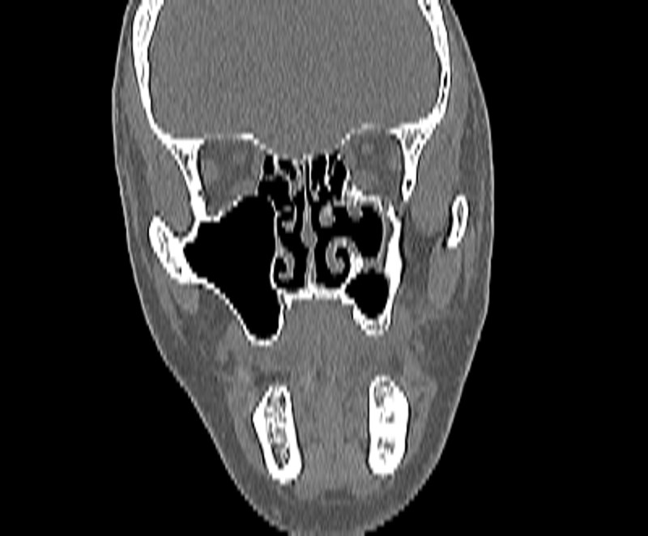

Andrii Mikhalov, dokumentacja medyczna
Andrii Mikhalov, dokumentacja medycznaNos i zatoki przynosowe
Opis radiologa (dokument główny)
Opis radiologa, TK zatok przynosowych i ortopantomogram, 2024 (Odrex). Konkluzja: cechy TK przewlekłego zapalenia zatoki szczękowej lewej. (TK zatok przynosowych i ortopantomogram, opis radiologa, 2024, PDF, 136 KB)
Problem dotyczy tylko lewej zatoki szczękowej.
- Lewa zatoka szczękowa: nierównomierne pogrubienie błony śluzowej do 10 mm z minimalną ilością treści przy ścianach; pooperacyjny ubytek ściany przyśrodkowej do 8 mm; deformacja ściany przedniej i tylno-bocznej, ubytek ściany przedniej do 5 mm; przebudowa ścian; ścieńczenie ściany dolnej do 3 mm w okolicy usuniętych zębów.
- Lewy przedni kompleks ujściowo-przewodowy: zablokowany (prawy: drożny). Przegroda nosa: skrzywienia nie odnotowano. Reszta jak w opisie.
- Zalecenia w opisie: konsultacja laryngologa, konsultacja stomatologa.
Septoplastyka, 2013
Septoplastyka (podśluzówkowa resekcja) z powodu skrzywienia przegrody nosa, J34.2, w prywatnym szpitalu w Stambule, Turcja. Przyjęty w 2013 roku z wieloletnią niedrożnością nosa, bólem głowy i wydzieliną z nosa. W znieczuleniu ogólnym skrzywioną część chrząstki przegrody i kostny grzebień na dnie przegrody usunięto przez nacięcie; oba nozdrza zatamponowano. Jedna noc w szpitalu, tampony usunięto, wypisany z leczeniem farmakologicznym i 10 dniami odpoczynku. Wypis (epikriz) po turecku. (Wypis po septoplastyce (epikriz, po turecku), 2013, JPG, 1,1 MB)
Konsultacja laryngologa, 2016
Prywatna klinika w Odessie. Rozpoznanie końcowe: nieżyt naczynioworuchowy nosa. Zalecono: RTG zatok przynosowych, pełna morfologia z glukozą i krzepliwością, badanie moczu, EKG. Notatka odręczna. (Notatka z konsultacji laryngologa, odręczna, 2016, JPG, 2,0 MB)
Usunięcie korzenia zęba i rewizja lewej zatoki szczękowej, 2016
Usunięcie resztki korzenia zęba i rewizja lewej zatoki szczękowej (brak wypisu). TK z 2024 roku wykazuje pooperacyjny ubytek ściany przyśrodkowej lewej zatoki szczękowej do 8 mm. Dokumenty: obrazy TK zębów, zdjęcie szwów na podniebieniu górnym i odręczna recepta chirurga stomatologa (Dalacin C 300 mg dwa razy dziennie przez 5 dni, Suprastin, Nimesil, płyn do płukania Givalex, Linex; odręczna notatka o kroplach do nosa, częściowo czytelna). Także: odręczna lista leków i roztworów (zdjęcie z 2016 roku) i odręczna karta pacjenta stomatologicznego (zdjęcie z 2016 roku). (TK zębów, przekroje szczęki, lewa zatoka szczękowa, 2016, JPG, 372 KB, Podniebienie górne ze szwami, JPG, 702 KB, Recepta chirurga stomatologa, odręczny, 2016, JPG, 330 KB, Lista leków i roztworów, odręczny (data zdjęcia), 2016, JPG, 78 KB, Karta pacjenta stomatologicznego, odręczny (data zdjęcia), 2016, JPG, 2,0 MB)
Zalecenie laryngologa, 2024
W 2024 roku laryngolog rozpoznał przewlekłe zapalenie lewej zatoki szczękowej i zalecił planową endoskopową lewostronną maksylotomię (rewizję). Nie wykonano jej z przyczyn niezwiązanych z medycyną. Konsultacja stomatologa zalecona w opisie radiologa do TK z 2024 roku również się nie odbyła, z tych samych przyczyn.
Redukcja dolnych małżowin nosowych
W Odrex omawiano redukcję dolnych małżowin nosowych. Chciałem, żeby wykonano ją zimną plazmą. Wspomniano o tym, ale nie zalecono. Jedna z lekarek powiedziała, że obawia się zespołu pustego nosa.
Kluczowe obrazy TK, 2024
Reprezentatywne przekroje TK zatok przynosowych, 2024 (JPEG, do szybkiego podglądu). Nie zastępują opisu radiologa. Pełne badanie jest w archiwum DICOM poniżej.



Wszystkie badania i dokumenty
- 2024: TK zatok przynosowych (DICOM), opis radiologa z 2024 roku, skierowanie od laryngologa na TK, konsultacje laryngologa. (TK zatok przynosowych, 2024, ZIP, 395,1 MB, wymaga przeglądarki DICOM, Skierowanie od laryngologa na TK zatok (Odrex), 2024, JPG, 447 KB, Konsultacja laryngologa, 2024, PDF, 647 KB, Konsultacja laryngologa, 2024, PDF, 643 KB)
- 2016: TK zatok przynosowych, TK głowy 3D, CBCT zębów (dwa archiwa), poglądowy obraz czaszki, konsultacje laryngologa. (TK zatok przynosowych, 2016, ZIP, 232,3 MB, wymaga przeglądarki DICOM, TK głowy, 3D, 2016, ZIP, 62,3 MB, wymaga przeglądarki DICOM, CBCT zębów, część 1, 2016, ZIP, 287,7 MB, wymaga przeglądarki DICOM, CBCT zębów, część 2, 2016, ZIP, 283,9 MB, wymaga przeglądarki DICOM, TK czaszki, boczny obraz poglądowy, 2016, JPG, 36 KB)
- 2013: TK zatok przynosowych (DICOM), konsultacja laryngologa, filmy z 2013 roku. (TK zatok przynosowych, 2013, ZIP, 289,7 MB, wymaga przeglądarki DICOM, Konsultacja laryngologa, skrzywienie przegrody nosa, 2013, JPG, 351 KB, Wideo, 2013, MP4, 6,1 MB, Wideo, 2013, MP4, 2,5 MB)
- Panoramiczne RTG i ortopantomogram. (Panoramiczne RTG zębów, BMP, 4,1 MB, Ortopantomogram z płyty, ZIP, 2,2 MB, wymaga przeglądarki DICOM)
Wszystkie pliki są też na stronie Dokumenty. Archiwa z obrazami otwierają się w każdej przeglądarce DICOM.
← Wstecz